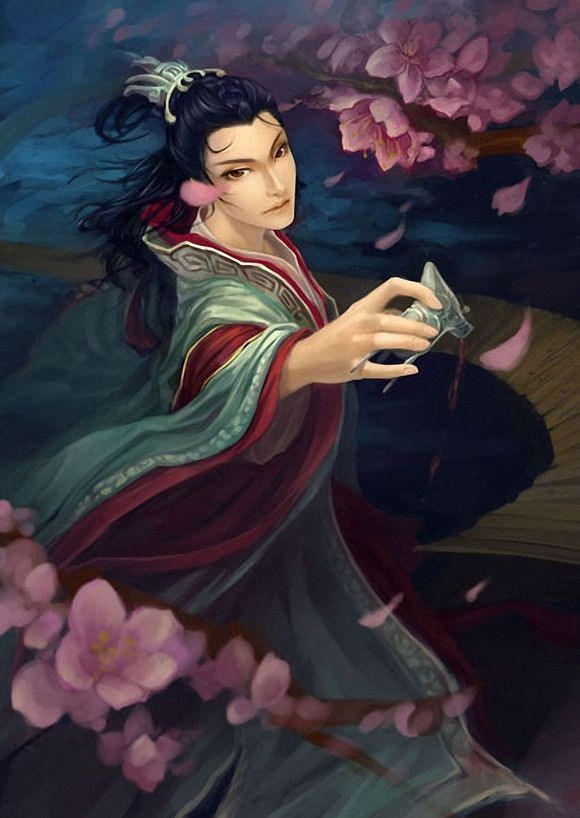
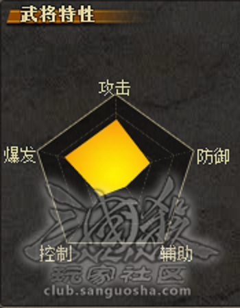

| （192年－232年12月27日），字名婴儿降生在东郡甄城（今山东甄城，一莘县）······ | ||
|---|---|---|
| 他便是曹操与武宣卞皇后所生第三子，曹植。 |
三国杀——武将列传 曹植 |
|
|---|---|
| 卡牌解析 |  | |||||||||||
|
||||||||||||
曹植是由游卡桌游推出的桌上《三国杀》扩充包一将成名2011 中的一张武将牌。武将设计来源三国文学家曹植，武将技能为落英、酒诗。 落英——当其他角色的梅花牌因弃置或判定而置入弃牌堆后，你可以获得其中的任意张牌。
酒诗——当你需要使用【酒】时，若你的武将牌正面向上，你可以翻面，若如此做，视为你使用一张【酒】；当你受到伤害后，若你的武将牌背面向上，你可以。 |
技能解析 落英
当其他角色的梅花牌，因弃牌或判定而进入弃牌堆时，你可以获得之。落英这个技能没有什么技巧，基本就是一个被动技能，获得别人弃的手牌的装备牌。梅花牌种类数量个人统计如下杀14，雷杀4，酒2，过河拆桥2，决斗1，借刀杀人2，南蛮1，无懈2，铁索4，乐不思蜀1，兵粮寸断1，+1马1，八卦盾1，仁王盾1，白银狮子1，藤甲1，诸葛连弩1。除了一些基本的出牌顺序的使用，基本就没有什么技巧了。而且运气成分也比较大，一轮回合没有♣判定牌的可能也是有的。
酒诗
◆其他角色被代替的和生效后的梅花判定牌置入弃牌堆时，你都可以发动【落英】。
若你的武将牌正面朝上，你可以(在合理的时机)将你的武将牌翻面来视为使用一张【酒】;当你的武将牌背面朝上时你受到伤害，你可在伤害结算后将之翻回正面。酒诗这个技能，个人感觉因为曹植很可能有一堆杀，在消耗对方闪后用酒杀给予致命一击是很给力的，关键是把握时机，这个需要一定三国杀经验，而且你进入反面后要考虑下回合存活以及受到伤害翻回的血量问题。如果你把这个技能想成保命苟且偷生的，那你想多了，1血人头该走的还是要走的。
总结：曹植的低嘲讽就可以看出这个武将的用处了，基本没有什么能力，落英是一个完全自动的技能，非常看运气。而酒诗的爆发就要看场上局势的变化了。总体评价曹植的武将强度并不高。比较具有娱乐性，曹植的设计具有文艺性。 |
 |
想了解更多？ |
|||
|---|---|---|---|
| 人物故事 | |||
少年才情 |
立嗣之争 |
洛水感怀 |
忧生之嗟 |